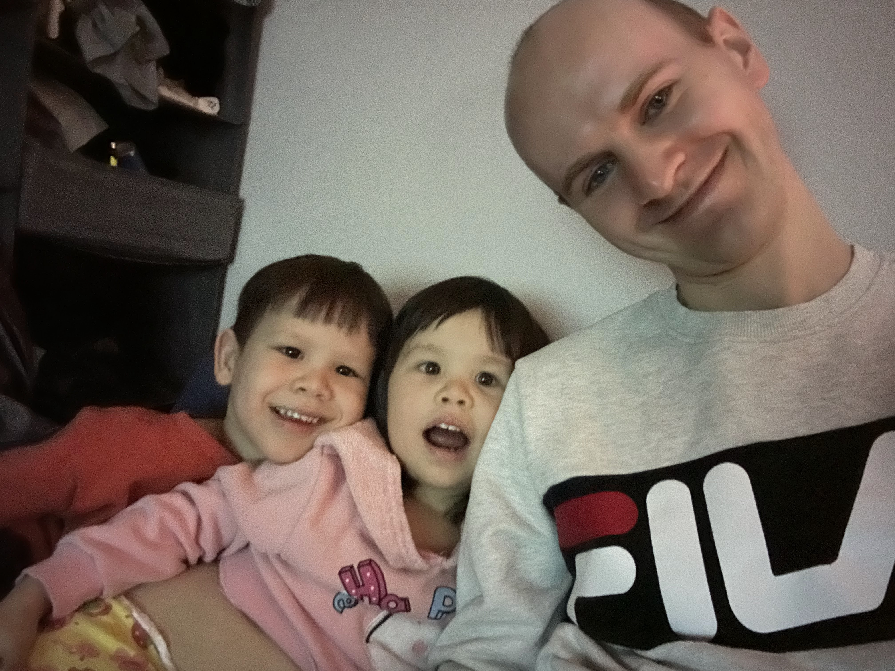

Jon Love
The single father that has a dream

Jon Love spotted playing with his two kids Vinny and Cece.
Here's a bit of what he has gone through
- 2009 - Two weeks before highschool graduation, his monther passed away
- 2010 -He had finished traveling the world and quickly learned Canada was not where he was meant to be
- 2011 -Efforts were made to get away but all proved unsuccesful
- 2012 -With a bit of luck and a lot of struggle, he found his way to Taiwan
- 2017 -After settling in and making a strong life in Taiwan, Jon met a girl and shortly after they were married and had a child together
- 2018 -His song Vinny entered the world
- 2019 -Although the couple struggled to maintain their lifestyles, they brought a second child into the world; Cece
- 2020 -The married couple was dealt a series of bad cards from accidents and injuries to family issues and fights. At the end of the year, the couple made the quick decision to get divorced
- 2022 -Following the divorce, the couple made up and broke up multiple times. Eventually they decided together that looking at a different country might provide a better future for the family. However, just weeks before they planned to leave, his wife decided she would rather pursure her own goals and left Jon to take care of the two kids and make the move alone
- 2023 -Jon took the kids to Canada in an effort to give the three of them a better future. The plan was to do schooling and apprenticeship in Canada and then make the move to Australia. Jon quickly found out that things don't operate the way he remembered and having kids in such a place was not the goal for his kids that he planned. He quickly realized that the career path he planned on taking was not a suitable choice for himself and staying in Canada for a few years just simply wasn't an option. He poured all of his effort into paving a new path into technology and going straight to Australia for study
- Future -Now we sit back and wait to see how well things will work out for Jon. He doesn't know how it will happen, but he has faith that things will turn out.